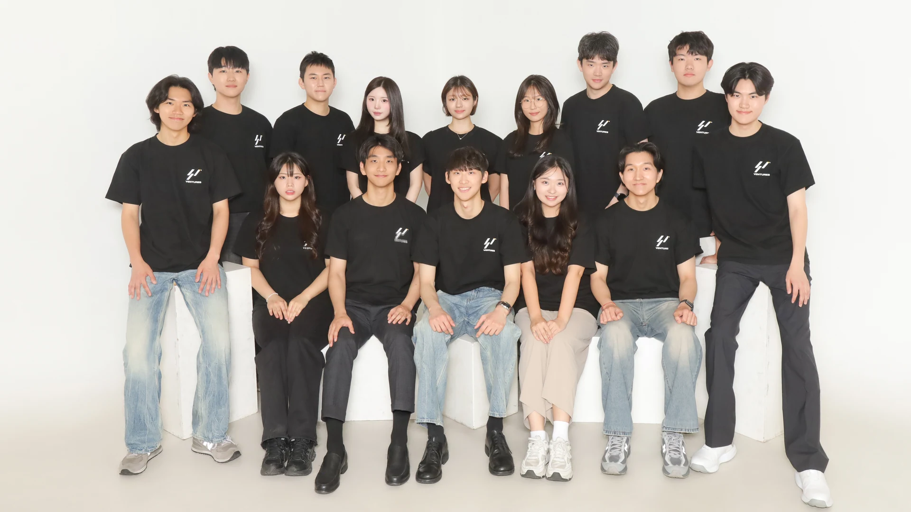
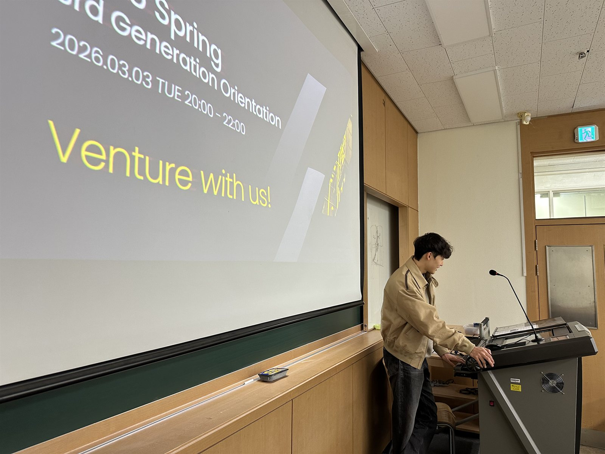
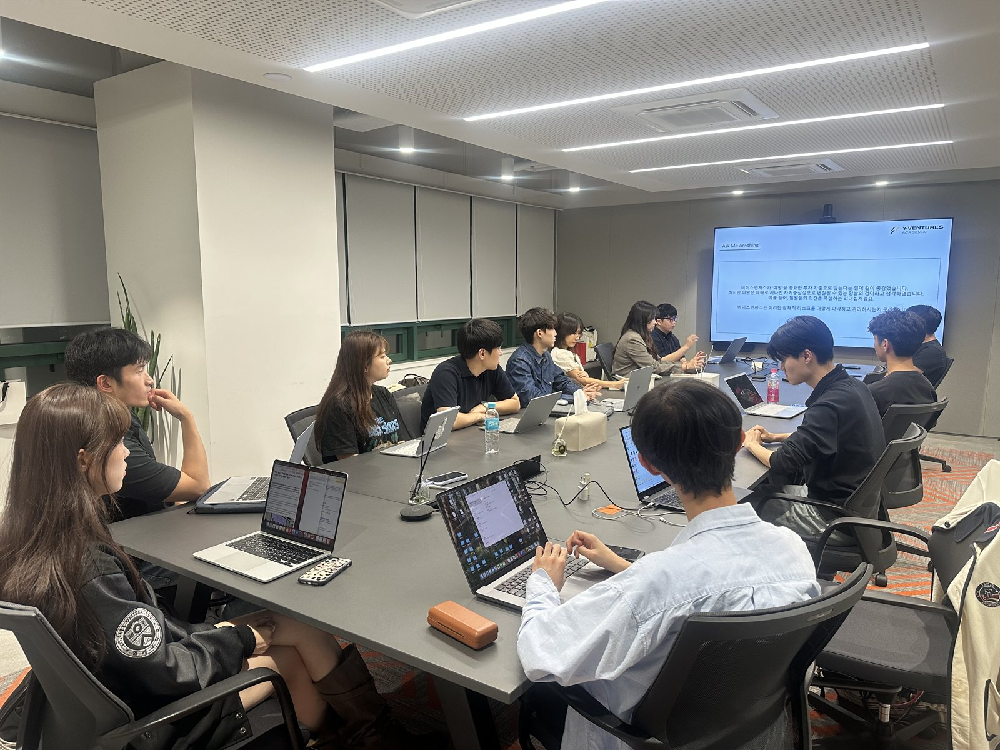
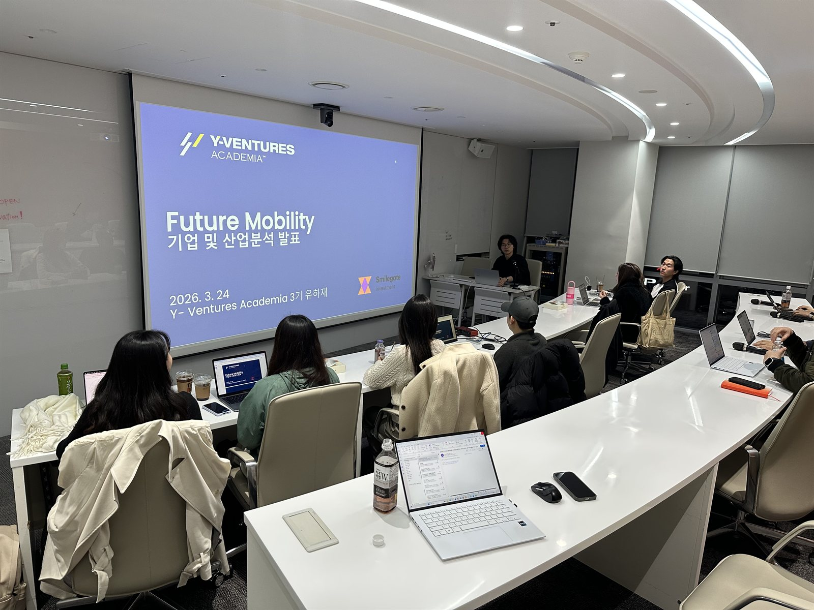
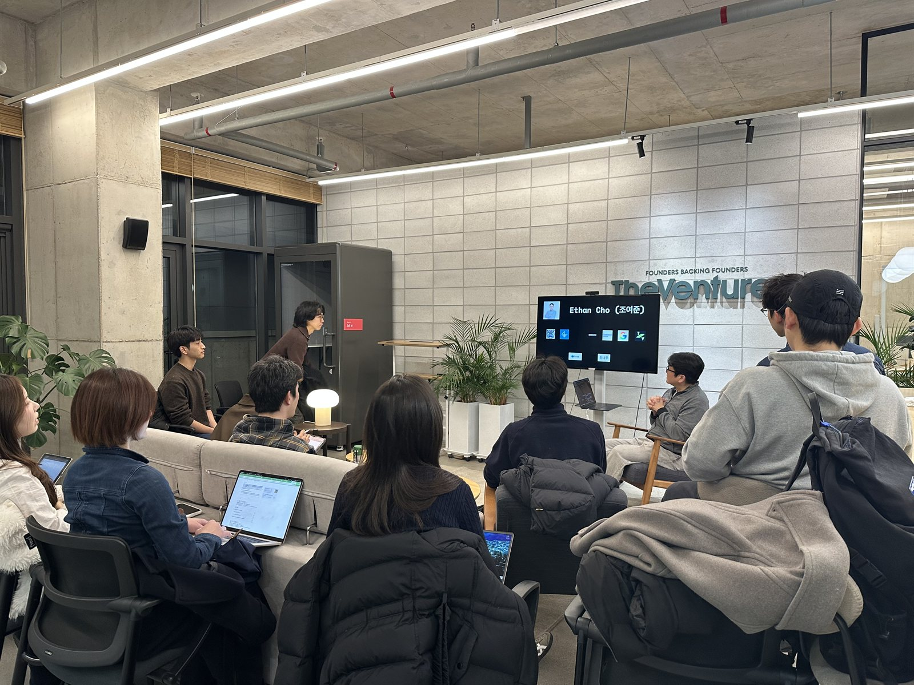

연세대학교 Venture Scout 단체 Y-VENTURES의 학회원.
학기 중에는 투자자의 눈으로 스타트업 생태계를 분석하고, 방학에는 교내 스타트업 엑셀러레이팅을 합니다.

Scouts는 Y-VENTURES에서 활동하는 학회원입니다. 학기 중에는 스타트업을 분석하고 투자심사보고서를 쓰며
투자자의 관점을 익히고, 방학에는 Y-Startup과 Boost Program을 직접 기획·운영하며 학생 창업팀을 키웁니다.
2026년 6월 Accelerator와 Academia가 하나로 통합되면서, 학회원은 두 축을 나눠 맡지 않습니다. 발굴부터 육성, 투자 검토까지 한 사람이 하나의 사이클로 경험합니다.
한 학기는 두 개의 세션으로 이어지고, 방학에는 쌓은 역량으로 직접 프로그램을 운영합니다.
투자자의 시선에서 창업가의 시선까지, 한 해 안에 모두 경험합니다.
팀별로 스타트업 한 곳을 정해 시장 분석부터 투심보고서까지 단계별로 학습합니다.
실제 벤처캐피탈과 산학협력 프로젝트를 진행하고, 마지막 세션에서 현직 심사역 앞에 섭니다.
학회원이 Y-Startup과 Boost Program을 직접 기획하고 운영합니다.




연세대학교 신촌·국제캠퍼스 학부, 대학원, 졸업생. 학년 및 졸업 여부 제한 없음.
주 6시간 고정 세션. 시험기간 휴회로 학업, 인턴과 병행 가능 (약 6학점 분량).
방학에는 학회원이 Y-VENTURES의 엑셀러레이팅 프로그램을 직접 기획하고 운영합니다.
연세 출신 창업가와 현직 심사역, 그리고 학생을 잇는 자리를 직접 만듭니다.